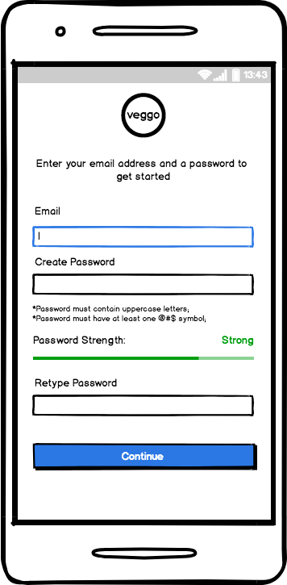
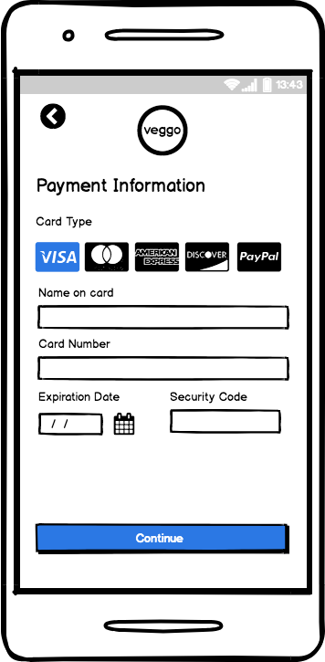
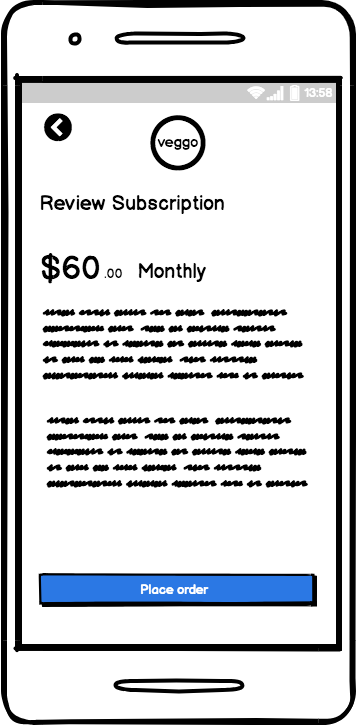
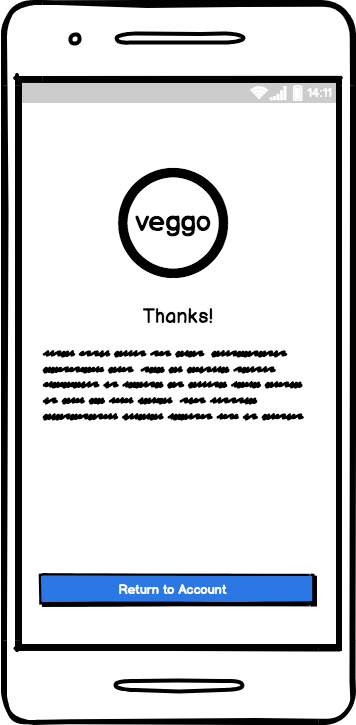

Company: Deliver food/vegetables through subscriptions
Project: Checkout flow for a monthly subscription vegetable delivery service.
Priority one requirements: First and last name, Mailing address, Email address and password (including a password strength meter), Credit card details
Most of my experiences comes from the user end of the checkout process. But I’ve never really paid attention in detail how I felt about it. It is a crucial part of the ecommerce process.
My initial design flow pictured below:

After doing some research I found that grouping relevant information in chunks creating a proximity between relevant fields (logical order), makes the user focus on one task at a time. Creating a 3 step process makes the checkout seem simple and easy. If there is one page it will feel overwhelming because there is too much information on one page.
I also debated of adding a back to previous feature because although android and iOS phones have a static back button that pops up from a swipe. I think giving the user a visible option to go back gives them reassurance.
The first part of the journey is the login details page. This part requires basic information Email and Password. Since the minimum requirement requires a password strength I also thought about showing/adding rules to making the password stronger along with the password strength meter. E.g. Must contain one capital letter, number, special character..etc.

The second page Billing/Shipping Details has a pretty basic and traditional layout. For the shipping section I added the option to use the same as the billing address. Just in case there are cases where the billing address differs from shipping address. If it is the same I added a checkbox to auto fill the information. Maybe have it automatically go to the next page if the checkbox is engaged.
The card info page has the basic information.
I added a review subscription page because I was not sure if the user knew exactly what they were getting. This allows them to review the order and place the order with confidence and giving a trusting experience.
A brief thank you message and an option to go back to the user accounts page.

Balsamiq link: https://balsamiq.cloud/sma28vs/ptaks9w